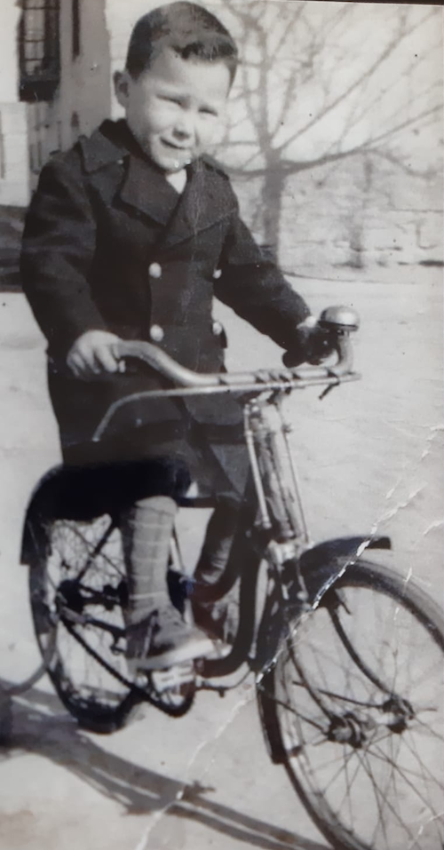
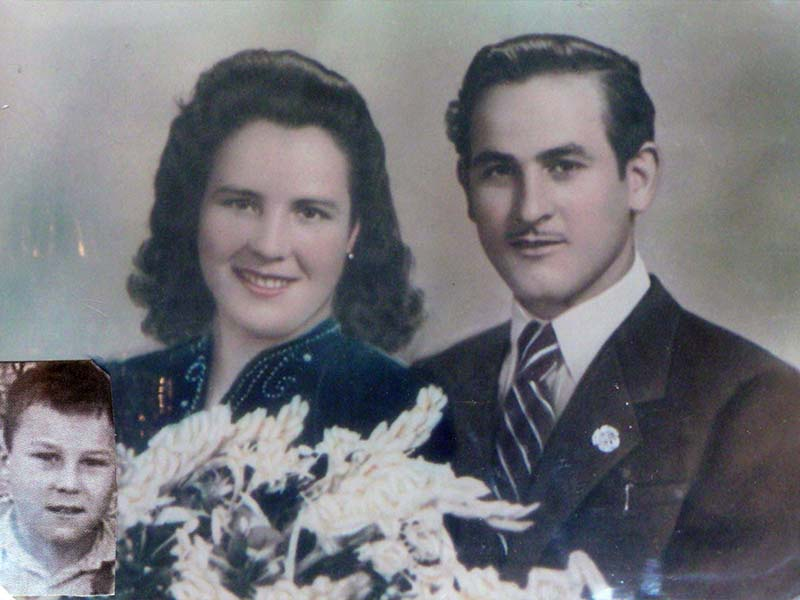
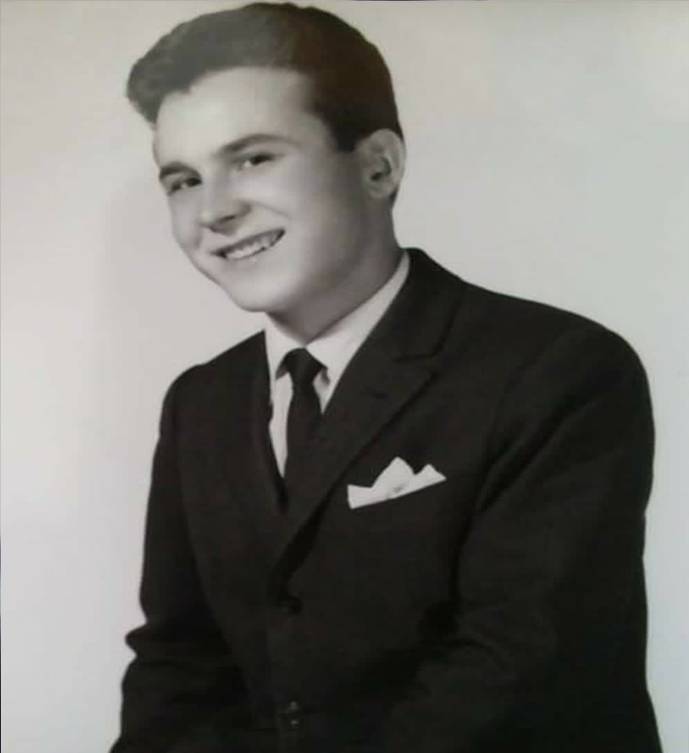
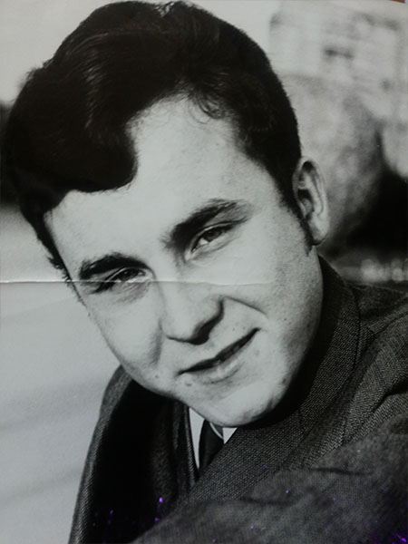
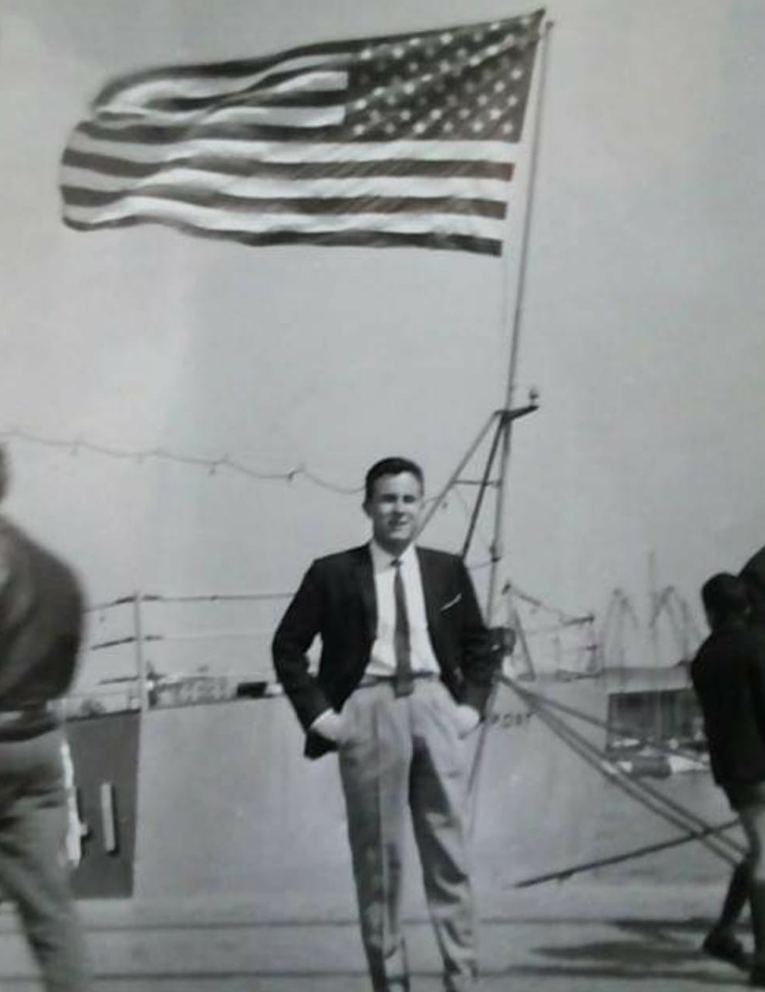
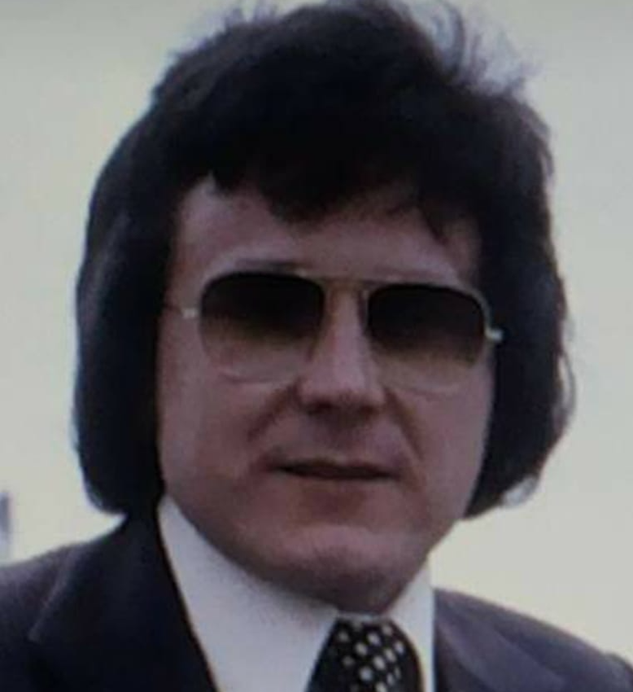
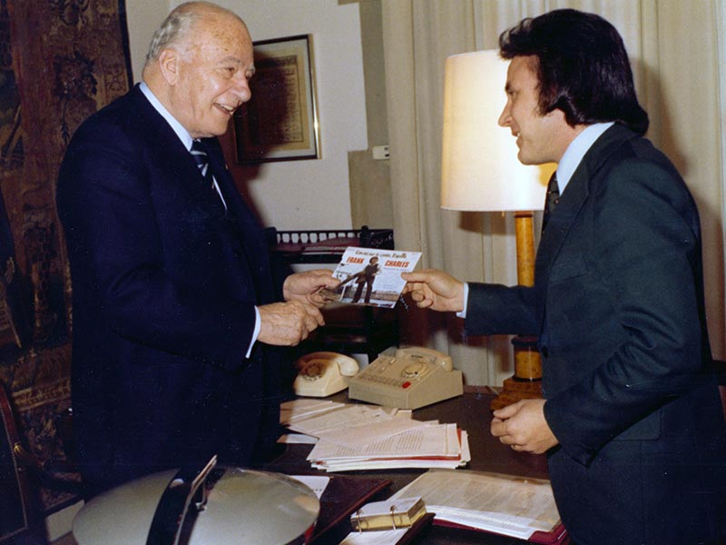
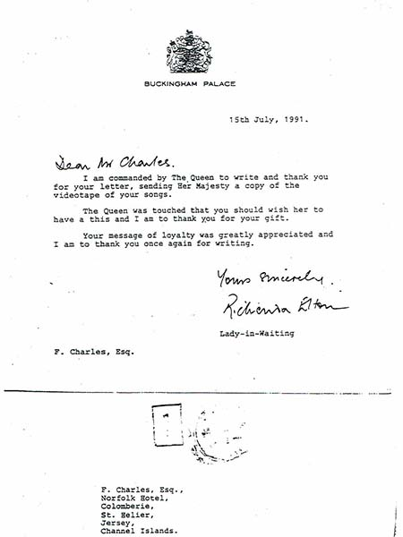
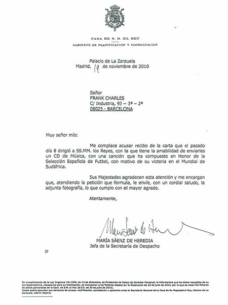
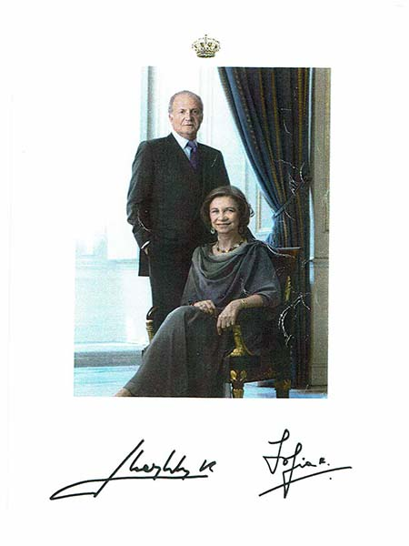

Francesc Xavier Charles Gòdia nace en Alcarràs, LLeida, el 16 de Noviembre de 1945.

Desde pequeño ya sentia una gran atracción por la música. Su padre queria que se dedicara a los estudios, en los que sacaba buenas notas, pero su madre siempre le apoyó en la consecución de su sueño: ser cantante.

A la edad de 13 o 14 años iba a Lleida a comprar discos en el Orley o a la Casa Guarro; le gustaban Josep Guardiola, Bobby Solo, Frank Sinatra, Elvis Presley... A los 16 o 17 años ya tuvo claro que queria ser cantante y con 18 años empieza a cantar en orquestas de Lleida, como la de Julio Pintó. Por aquel entonces queda finalista en varios programas radiofónicos.

En 1965 gana el concurso del programa de Radio Lleida, 'El Carnet Del Radioyente' cantando la canción 'El Viejo Frac', de Doménico Modugno, una canción melódica muy escuchada en aquellos tiempos. El primer premio en aquel concurso radiofónico lleva a Francesc Xavier a instalarse en Barcelona en busca de futuras oportunidades. Ese mismo año participa en programas de radio, como 'Radio Scop' y 'La Nueva Frontera', y en festivales como el 'Festival de la Costa Brava', el 'Festival de Badalona' o en el del Teatro de Barcelona. En este último consigue el primer premio.

Ya en 1966, la gran oportunidad le llega de la mano de otro concurso, esta vez de ámbito estatal y en la televisión. Era el popular 'Salto a la Fama' de T.V.E., en el que acaba quedando finalista. Con la confianza que le dió ese concurso, Francesc se va a Madrid a examinarse del carnet vertical que le acreditava como artista profesional y luego entra en el Conservatori de Música de Barcelona y compagina esos estudios con la Universidad, pero ya con la idea de dedicarse por entero a la música y el arte. También ese año graba su primer EP con canciones de Bobby Solo como 'Esta vez no' y ' Ringo'.
En 1967 firma contrato con una discográfica, lo que le permite ganar relevancia en el mundo artístico de aquel tiempo con la versión solista en español de la mundialmente conocida 'Catedral de Winchester'. En esta época también colabora con artistas como Bruno Lomas, al que le unia una gran amistad, Luis Aguilé o Georgie Dann, algo mayores que él pero que de alguna manera le apadrinaron en sus inicios.
Gracias al éxito de 'Catedral de Winchester', en esos años finales de los 60 y principios de los 70 interviene en reconocidos programas televisivos como 'Gran Premio', 'Teleritmo', Galas del Sábado', 'Musical 69' y 'Canciones del Mar' entre otros, además de actuar en la mejores salas de fiestas de todo el país. También es en esos primeros años de la década de los 70 cuando Frank gana el 'Festival de Mallorca', el 'Festival de Aranda de Duero' y el 'Festival Hispanoportugués de la Canción', además de ser galardonado con el premio a la canción más comercial del 'Festiva de Benidorm' con el tema 'Caramba, caramba', interpretada con la Hermanas Ros.

En 1973, Frank decide cruzar fronteras y se instala en Londres, donde pasará tres años en los que realiza actuaciones en salas de fiestas españolas de la capital inglesa, como 'Costa Brava' o 'Los Andaluces', y en salas inglesas como 'Tifanys'. También realiza apariciones televisivas en programas de la BBC-1 y la BBC-2 y en el importante show de T.V. 'Oppotunity Knock', con destacadas figuras como Cliff Richard y Tom Jones. En el último año de su estancia en Londres participa en varios festivales organizados por la Embajada de Emigración para Españoles y en la elección de Miss España en el 'Royal Albert Hall', donde le conceden a Frank la Concha de Oro, premio a la interpretación. De igual manera, le otorgan la Medalla de Plata en el 'Palace Corts, Spanish Place'.

En 1978 publica 'Un Crit Per Catalunya', canción reconocida por el President de la Generalitat El Molt Honorable Josep Tarradelles.

En 1982 traslada su residencia a Jersey, donde edita 'Jersey's Love', canción dedicada a la isla y por la que recibe un agradecimiento especial de las autoridades.
En 1986 sale a la luz 'Ja Surt l'Estel a l'Alba' reconozida como el himno d'Estat Català y su presidente.
En 1990 publica 'Lleida Meva Aimada' por la que recibe un reconocimiento del Ayuntamiento de la ciudad de Lleida.
En 1991 Frank Charles escribe y edita la primera canción para los Juegos Olímpicos de Barcelona. Reconocida por Su Majestad la Reina Elisabeth II.

En 1994 dedica a Andorra la canción 'Sweet Andorra' que le otorga el reconocimiento del público del Principado.
En 1996 aparecen las canciones 'Torredembarra Que Maca Estàs', dedicada a la localidad catalana, y 'Capricho Mediterráneo', escrita para Ibiza, la isla Blanca. En ambos casos las canciones son reconocidas por las autoridades con la entrega de una placa conmemorativa.
En 1997 escribe 'A La Meva Mare Aurora' dedicada a su querida madre y a Alcarràs, dónde es reconocido como Hijo Predilecto de la localidad.

En 1998 publica 'My Sweet Madeira, My Little Jersey' y 'My Sweet Green Island' dedicadas a las dos islas, muy importantes en la vida de Frank Charles. En el mismo disco aparece el primer poema en todo el mundo dedicado a la Pricesa Diana, 'Tears And White Roses For A Caring Princess'. La canción fue reconocida por Tony Blair y Bill Clinton y los almacenes Harrods.
En 2009 vuelve para publicar 'A song For Barcelona' ('Un Crit Per Tu, Barça') dedicada al FC Barcelona, sus jóvenes jugadores y a Pep Guardiola por un sueño màgico hecho realidad con la consecución del triplete por el equipo blaugrana.
En 2010 Frank dedica a la Selección Española de Futbol 'From South Africa to Eternity' por la consecución del título en el Mundial de Futbol de aquel año. La canción fue reconocida por la FIFA, la Federación Española de Futbol, Vicente del Bosque y Nelson Mandela.


En 2012 aparece 'The Scent Of London', la primera canción dedicada a los Juegos Olímpicos de Londres, acreditada y reconocida por la Reina Elisabeth II y Boris Johnson, alcalde de Londres.